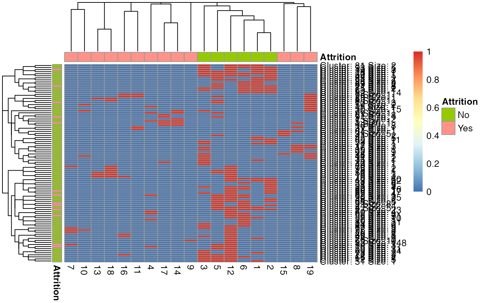
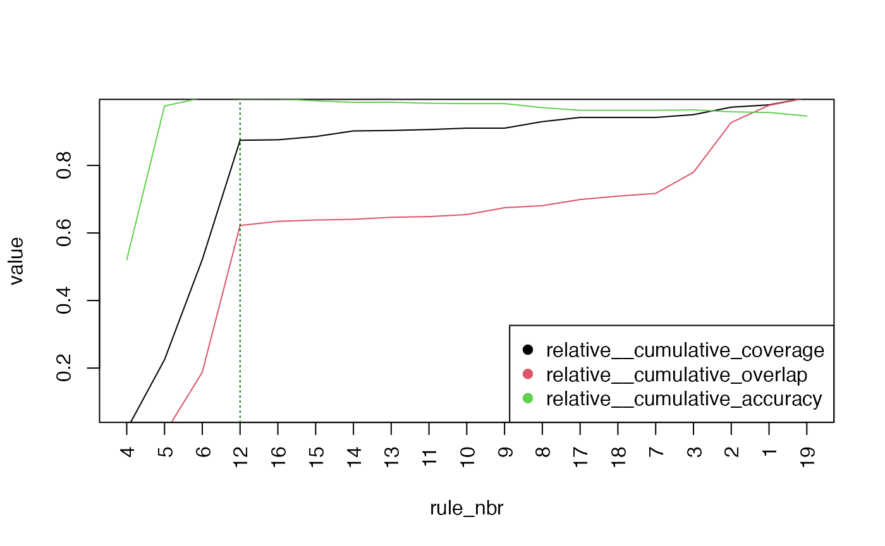

vignettes/articles/using_tidyrules.Rmd
using_tidyrules.Rmdtidyrules R package provides a framework to work with decision rules. Rules can be extracted from supported models, augmented with (custom) metrics using validation data, manipulated using standard dataframe operations, reordered and pruned based on a metric, predict on unseen (test) data. Utilities include; Creating a rulelist manually, Exporting a rulelist as a SQL case statement and so on. The package offers two classes; rulelist and rulelset based on dataframe.
This document provides a working example of a classification problem
where the functionality of package is showcased. We use
modeldata::attrition dataset where Attrition
column is the binary dependent variable.
att = modeldata::attrition
set.seed(1)
valid_index = sample(c(TRUE, FALSE), nrow(att), replace = TRUE)
att_train = att[!valid_index, ] # nrow: 742
att_valid = att[valid_index, ] # nrow: 728
glimpse(att)## Rows: 1,470
## Columns: 31
## $ Age <int> 41, 49, 37, 33, 27, 32, 59, 30, 38, 36, 35, 2…
## $ Attrition <fct> Yes, No, Yes, No, No, No, No, No, No, No, No,…
## $ BusinessTravel <fct> Travel_Rarely, Travel_Frequently, Travel_Rare…
## $ DailyRate <int> 1102, 279, 1373, 1392, 591, 1005, 1324, 1358,…
## $ Department <fct> Sales, Research_Development, Research_Develop…
## $ DistanceFromHome <int> 1, 8, 2, 3, 2, 2, 3, 24, 23, 27, 16, 15, 26, …
## $ Education <ord> College, Below_College, College, Master, Belo…
## $ EducationField <fct> Life_Sciences, Life_Sciences, Other, Life_Sci…
## $ EnvironmentSatisfaction <ord> Medium, High, Very_High, Very_High, Low, Very…
## $ Gender <fct> Female, Male, Male, Female, Male, Male, Femal…
## $ HourlyRate <int> 94, 61, 92, 56, 40, 79, 81, 67, 44, 94, 84, 4…
## $ JobInvolvement <ord> High, Medium, Medium, High, High, High, Very_…
## $ JobLevel <int> 2, 2, 1, 1, 1, 1, 1, 1, 3, 2, 1, 2, 1, 1, 1, …
## $ JobRole <fct> Sales_Executive, Research_Scientist, Laborato…
## $ JobSatisfaction <ord> Very_High, Medium, High, High, Medium, Very_H…
## $ MaritalStatus <fct> Single, Married, Single, Married, Married, Si…
## $ MonthlyIncome <int> 5993, 5130, 2090, 2909, 3468, 3068, 2670, 269…
## $ MonthlyRate <int> 19479, 24907, 2396, 23159, 16632, 11864, 9964…
## $ NumCompaniesWorked <int> 8, 1, 6, 1, 9, 0, 4, 1, 0, 6, 0, 0, 1, 0, 5, …
## $ OverTime <fct> Yes, No, Yes, Yes, No, No, Yes, No, No, No, N…
## $ PercentSalaryHike <int> 11, 23, 15, 11, 12, 13, 20, 22, 21, 13, 13, 1…
## $ PerformanceRating <ord> Excellent, Outstanding, Excellent, Excellent,…
## $ RelationshipSatisfaction <ord> Low, Very_High, Medium, High, Very_High, High…
## $ StockOptionLevel <int> 0, 1, 0, 0, 1, 0, 3, 1, 0, 2, 1, 0, 1, 1, 0, …
## $ TotalWorkingYears <int> 8, 10, 7, 8, 6, 8, 12, 1, 10, 17, 6, 10, 5, 3…
## $ TrainingTimesLastYear <int> 0, 3, 3, 3, 3, 2, 3, 2, 2, 3, 5, 3, 1, 2, 4, …
## $ WorkLifeBalance <ord> Bad, Better, Better, Better, Better, Good, Go…
## $ YearsAtCompany <int> 6, 10, 0, 8, 2, 7, 1, 1, 9, 7, 5, 9, 5, 2, 4,…
## $ YearsInCurrentRole <int> 4, 7, 0, 7, 2, 7, 0, 0, 7, 7, 4, 5, 2, 2, 2, …
## $ YearsSinceLastPromotion <int> 0, 1, 0, 3, 2, 3, 0, 0, 1, 7, 0, 0, 4, 1, 0, …
## $ YearsWithCurrManager <int> 5, 7, 0, 0, 2, 6, 0, 0, 8, 7, 3, 8, 3, 2, 3, …tidy generic creates rulelist from a
supported model fit. rulelist class is fundamental data
structure which offers many methods such as predict,
augment and so on. A rulelist is a dataframe
with some extra attributes. The order of rows of the dataframe defines
the order of preference of rules.
tidy supports these model fits:
C5 rule-based model (classification)rpart tree (classification / regression)party tree (classification / regression)cubist tree (regression)Lets build a C5 model and then extract a rulelist:
model_c5 = C50::C5.0(Attrition ~., data = att_train, rules = TRUE)
model_c5##
## Call:
## C5.0.formula(formula = Attrition ~ ., data = att_train, rules = TRUE)
##
## Rule-Based Model
## Number of samples: 742
## Number of predictors: 30
##
## Number of Rules: 19
##
## Non-standard options: attempt to group attributes
tidy_c5 = tidy(model_c5)
tidy_c5
## ---- Rulelist --------------------------------
## ▶ Keys: trial_nbr
## ▶ Number of distinct keys: 1
## ▶ Number of rules: 19
## ▶ Model type: C5
## ▶ Estimation type: classification
## ▶ Is validation data set: FALSE
##
##
## rule_nbr trial_nbr LHS RHS support confidence lift
## <int> <int> <chr> <fct> <int> <dbl> <dbl>
## 1 1 1 ( Age > 26 ) & ( Environme… No 189 0.963 1.2
## 2 2 1 ( Age > 26 ) & ( Environme… No 244 0.951 1.1
## 3 3 1 ( BusinessTravel == 'Non-T… No 74 0.947 1.1
## 4 4 1 ( Age <= 31 ) & ( Educatio… Yes 12 0.929 5.4
## 5 5 1 ( JobSatisfaction %in% c('… No 157 0.924 1.1
## 6 6 1 ( Age > 26 ) & ( Environme… No 351 0.924 1.1
## 7 7 1 ( EnvironmentSatisfaction … Yes 8 0.9 5.3
## 8 8 1 ( OverTime == 'Yes' ) & ( … Yes 8 0.9 5.3
## 9 9 1 ( BusinessTravel %in% c('T… Yes 8 0.9 5.3
## 10 10 1 ( EnvironmentSatisfaction … Yes 7 0.889 5.2
## 11 11 1 ( JobInvolvement == 'Low' … Yes 7 0.889 5.2
## 12 12 1 ( OverTime == 'No' ) No 516 0.888 1.1
## 13 13 1 ( EnvironmentSatisfaction … Yes 5 0.857 5
## 14 14 1 ( MaritalStatus %in% c('Ma… Yes 17 0.842 4.9
## 15 15 1 ( NumCompaniesWorked > 6 )… Yes 10 0.833 4.9
## 16 16 1 ( EnvironmentSatisfaction … Yes 8 0.8 4.7
## 17 17 1 ( Age <= 26 ) & ( Environm… Yes 22 0.75 4.4
## 18 18 1 ( EnvironmentSatisfaction … Yes 9 0.636 3.7
## 19 19 1 ( EnvironmentSatisfaction … Yes 28 0.633 3.7
## ----------------------------------------------A rulelist is expected to have these mandatory columns:
rule_nbr: Something that identifies a rule uniquely per
keys. Typically, an integer vector starting from 1.LHS: A character vector of R-parsable stringsRHS: factor (for classification), numeric (for
regression) or character vector of R-parsable strings (to be
evaluated)trial_nbr is a key. C5 model builds
multiple boosting iterations indexed by trial_nbr (default
is set to 1). rule_nbr’s start from 1 for each
trial_nbr. In general, keys columns along with
rule_nbr column should be unique.
Attribute estimation_type is central to further methods
where metrics get computed. At this moment, the package supports these:
classification, regression.
The rulelist (obtained from C5 model) ordered by
confidence column, by default.
A rulelist can be either created using tidy on a
supported model or a from a dataframe using
as_rulelist.
☺☺☺ rulelist is simply a dataframe with some attributes. Manipulate them with standard dataframe operations (
dplyr,data.table…).tibble::as_tibbleoras.data.framewill convert to a tibble/dataframe (with attributes).as_rulelistcan be used to convert to a rulelist.
The mainstay of package is the predict method of the
rulelist class. predict provides the first rule (in the
order as per the rulelist) that is applicable for a observation/row in
the test data. If a row is not covered by any rule, then
rule_nbr is missing.
predict(tidy_c5, att_valid)## # A tibble: 728 × 3
## row_nbr trial_nbr rule_nbr
## <int> <int> <int>
## 1 1 1 8
## 2 2 1 6
## 3 3 1 6
## 4 4 1 6
## 5 5 1 NA
## 6 6 1 12
## 7 7 1 12
## 8 8 1 5
## 9 9 1 12
## 10 10 1 1
## # ℹ 718 more rows☺☺☺ To know all rules applicable for a row, use argument
multiple = TRUE. Alternately,predicton a ruleset always yields all rules applicable per row.
predict(tidy_c5, att_valid, multiple = TRUE)## # A tibble: 728 × 3
## row_nbr trial_nbr rule_nbr
## <int> <int> <list>
## 1 1 1 <int [2]>
## 2 2 1 <int [1]>
## 3 3 1 <int [1]>
## 4 4 1 <int [2]>
## 5 5 1 <int [1]>
## 6 6 1 <int [1]>
## 7 7 1 <int [1]>
## 8 8 1 <int [2]>
## 9 9 1 <int [1]>
## 10 10 1 <int [3]>
## # ℹ 718 more rowsset_validation_data: Setting (or removing)
validation data adds a validation data to a rulelist which gets used for
augment, calculate and other methods.
set_keys: Sets (or removes) keys.
tidy_c5 =
tidy_c5 %>%
set_validation_data(att_valid, y_name = "Attrition", weight = 1) %>%
set_keys(NULL)
tidy_c5## ---- Rulelist --------------------------------
## ▶ Keys: NULL
## ▶ Number of rules: 19
## ▶ Model type: C5
## ▶ Estimation type: classification
## ▶ Is validation data set: TRUE
##
##
## rule_nbr trial_nbr LHS RHS support confidence lift
## <int> <int> <chr> <fct> <int> <dbl> <dbl>
## 1 1 1 ( Age > 26 ) & ( Environme… No 189 0.963 1.2
## 2 2 1 ( Age > 26 ) & ( Environme… No 244 0.951 1.1
## 3 3 1 ( BusinessTravel == 'Non-T… No 74 0.947 1.1
## 4 4 1 ( Age <= 31 ) & ( Educatio… Yes 12 0.929 5.4
## 5 5 1 ( JobSatisfaction %in% c('… No 157 0.924 1.1
## 6 6 1 ( Age > 26 ) & ( Environme… No 351 0.924 1.1
## 7 7 1 ( EnvironmentSatisfaction … Yes 8 0.9 5.3
## 8 8 1 ( OverTime == 'Yes' ) & ( … Yes 8 0.9 5.3
## 9 9 1 ( BusinessTravel %in% c('T… Yes 8 0.9 5.3
## 10 10 1 ( EnvironmentSatisfaction … Yes 7 0.889 5.2
## 11 11 1 ( JobInvolvement == 'Low' … Yes 7 0.889 5.2
## 12 12 1 ( OverTime == 'No' ) No 516 0.888 1.1
## 13 13 1 ( EnvironmentSatisfaction … Yes 5 0.857 5
## 14 14 1 ( MaritalStatus %in% c('Ma… Yes 17 0.842 4.9
## 15 15 1 ( NumCompaniesWorked > 6 )… Yes 10 0.833 4.9
## 16 16 1 ( EnvironmentSatisfaction … Yes 8 0.8 4.7
## 17 17 1 ( Age <= 26 ) & ( Environm… Yes 22 0.75 4.4
## 18 18 1 ( EnvironmentSatisfaction … Yes 9 0.636 3.7
## 19 19 1 ( EnvironmentSatisfaction … Yes 28 0.633 3.7
## ----------------------------------------------☺☺☺ Setting weight argument (other than 1 which means equal weigth) leads to calculating weighted metrics.
augment adds metrics related to validation data in a new
column ‘augmented_stats’.
## Rows: 19
## Columns: 10
## $ rule_nbr <int> 1, 2, 3, 4, 5, 6, 7, 8, 9, 10, 11, 12, 13,…
## $ trial_nbr <int> 1, 1, 1, 1, 1, 1, 1, 1, 1, 1, 1, 1, 1, 1, …
## $ LHS <chr> "( Age > 26 ) & ( EnvironmentSatisfaction …
## $ RHS <fct> No, No, No, Yes, No, No, Yes, Yes, Yes, Ye…
## $ support <int> 189, 244, 74, 12, 157, 351, 8, 8, 8, 7, 7,…
## $ confidence <dbl> 0.9634000, 0.9512000, 0.9474000, 0.9285714…
## $ lift <dbl> 1.2, 1.1, 1.1, 5.4, 1.1, 1.1, 5.3, 5.3, 5.…
## $ augmented_stats__support <dbl> 212, 236, 76, 13, 153, 306, 10, 17, 10, 6,…
## $ augmented_stats__confidence <dbl> 0.89622642, 0.91101695, 0.88157895, 0.4615…
## $ augmented_stats__lift <dbl> 1.0285265, 1.0455004, 1.0117168, 3.5880893…☺☺☺ If augmented metrics differ from train data metrics, then it could indicate drift in the data!
☺☺☺
augmentalso supports custom metrics indplyr::summarisesyntax!
Plotting a rulelist as a heatmap helps in understanding these things:
plot(tidy_c5)
☺☺☺ distance metric for rules is
jaccardand distance metric for row clusters iseuclidean. Former can be changed to any distance supported byproxypackage or a custom distance function for custom insight!
☺☺☺ When you have a rulelist which is a combination of multiple classifiers, rule clusters quickly reveal ‘correlated’ rules! The ones which cover almost same rows, but LHS of each reads different!
calculate computes cumulative metrics (as rules are
applied in the row order) depending on attribute
estimation_type.
calculate(tidy_c5)## # A tibble: 19 × 4
## rule_nbr cumulative_coverage cumulative_overlap cumulative_accuracy
## <int> <dbl> <dbl> <dbl>
## 1 1 212 0 0.896
## 2 2 277 171 0.910
## 3 3 323 187 0.895
## 4 4 336 187 0.878
## 5 5 413 217 0.877
## 6 6 495 301 0.875
## 7 7 500 306 0.866
## 8 8 515 308 0.852
## 9 9 525 308 0.844
## 10 10 527 312 0.843
## 11 11 529 314 0.841
## 12 12 686 456 0.848
## 13 13 687 460 0.849
## 14 14 697 462 0.845
## 15 15 702 466 0.840
## 16 16 702 470 0.840
## 17 17 710 480 0.835
## 18 18 710 484 0.835
## 19 19 725 495 0.826☺☺☺
calculateallows a custom metric of your choice!
reorder intends to reorder the order of rules. At the
moment, the greedy implementation adds one rule at a time to a new
rulelist (from the input rulelist) such that a metric (see
calculate) is maximixed/minimized.
Suppose, you wanted to find a smaller ruleset with least overlap that would still cover 80% of the validation_data. Then,
reorder(tidy_c5,
metric = c("cumulative_overlap",
"cumulative_coverage",
"cumulative_accuracy"
),
minimize = TRUE
) %>%
mutate(rel_cum_overlap =
cumulative_overlap / max(cumulative_overlap),
rel_cum_coverage =
cumulative_coverage / max(cumulative_coverage)
) %>%
select(rule_nbr, LHS, RHS,
rel_cum_overlap, rel_cum_coverage,
cumulative_accuracy
)## ⠙ Reordering ... 4 done (1.4/s) | 2.8s## ⠹ Reordering ... 5 done (1.3/s) | 3.7s## ⠸ Reordering ... 8 done (1.1/s) | 7s## ⠼ Reordering ... 11 done (1.1/s) | 10.4s## ⠴ Reordering ... 14 done (1/s) | 13.4s## ⠦ Reordering ... 18 done (1.1/s) | 15.9s## ⠦ Reordering ... 19 done (1.2/s) | 16.1s## ## ---- Rulelist --------------------------------
## ▶ Keys: NULL
## ▶ Number of rules: 19
## ▶ Model type: C5
## ▶ Estimation type: classification
## ▶ Is validation data set: TRUE
##
##
## rule_nbr LHS RHS rel_cum_overlap rel_cum_coverage cumulative_accuracy
## <int> <chr> <fct> <dbl> <dbl> <dbl>
## 1 16 ( Enviro… Yes 0 0.0124 0.556
## 2 9 ( Busine… Yes 0 0.0262 0.474
## 3 8 ( OverTi… Yes 0 0.0497 0.444
## 4 4 ( Age <=… Yes 0 0.0676 0.449
## 5 3 ( Busine… No 0.0101 0.166 0.708
## 6 15 ( NumCom… Yes 0.0141 0.175 0.677
## 7 14 ( Marita… Yes 0.0222 0.189 0.672
## 8 13 ( Enviro… Yes 0.0242 0.196 0.655
## 9 12 ( OverTi… No 0.190 0.819 0.854
## 10 17 ( Age <=… Yes 0.208 0.832 0.846
## 11 11 ( JobInv… Yes 0.214 0.833 0.844
## 12 10 ( Enviro… Yes 0.220 0.836 0.843
## 13 7 ( Enviro… Yes 0.232 0.836 0.843
## 14 6 ( Age > … No 0.638 0.942 0.837
## 15 18 ( Enviro… Yes 0.646 0.943 0.836
## 16 5 ( JobSat… No 0.780 0.950 0.837
## 17 2 ( Age > … No 0.927 0.972 0.833
## 18 19 ( Enviro… Yes 0.949 0.993 0.824
## 19 1 ( Age > … No 1 1 0.822
## ----------------------------------------------we infer that first 9 rules (~ 20% overlap) in the reordered rulelist would do still ensuring an accuracy of 85% !
☺☺☺ In the above code, 2nd metric onwards are used to break ties! (similar to
base::order)
☺☺☺ Reordering changes the decision bourdaries of your fit! It is a post-hoc method to overlap the learnt rules to optimize for the metric you need! But remember, greedy optimization method does guarantee the global minima (maxima)!
☺☺☺
reordercomes with ainit = kargument which leaves a predecided top k rules in their order and reorders only bottom ones. This might be required when policy layer needs to be incorporated into the rule engine!
prune suggests k th rule to stop at based on some
stopping criteria.
Suppose, we seek to find a smaller rulelist with maximum possible accuracy with a minimum (relative) coverage of 70% and (relative) overlap not more than half the number of rows. Then,
prune_suggestion =
reorder(tidy_c5, "cumulative_accuracy", minimize = FALSE) %>%
prune(stop_expr_string = "relative__cumulative_coverage >= 0.7 & cumulative_overlap <= 728/2")## ⠙ Reordering ... 4 done (1.5/s) | 2.6s## ⠹ Reordering ... 7 done (1.2/s) | 5.8s## ⠸ Reordering ... 10 done (1.1/s) | 9.2s## ⠼ Reordering ... 13 done (1/s) | 12.4s## ⠴ Reordering ... 16 done (1.1/s) | 15s## ⠴ Reordering ... 19 done (1.2/s) | 16.1s##
prune_suggestion## ── Prune Suggestion ────────────────────────────────────────────────────────────## ✔ Keep first 4 out of 19## ## ℹ Metrics after 4 rules:## ## ℹ Run `plot(x)` for details; `x$pruned` to get pruned rulelist## ────────────────────────────────────────────────────────────────────────────────
plot(prune_suggestion)
prune_suggestion$pruned## ---- Rulelist --------------------------------
## ▶ Keys: NULL
## ▶ Number of rules: 4
## ▶ Model type: C5
## ▶ Estimation type: classification
## ▶ Is validation data set: TRUE
##
##
## rule_nbr trial_nbr LHS RHS support confidence lift cumulative_accuracy
## <int> <int> <chr> <fct> <int> <dbl> <dbl> <dbl>
## 1 4 1 ( Age <… Yes 12 0.929 5.4 0.462
## 2 5 1 ( JobSa… No 157 0.924 1.1 0.865
## 3 6 1 ( Age >… No 351 0.924 1.1 0.886
## 4 12 1 ( OverT… No 516 0.888 1.1 0.883
## ----------------------------------------------☺☺☺
pruneis powerful when combined withreorder! Whilereorderchases a metric,prunetakes care of constraints! This might lead to small rulelists, very good for explainability!
Use to_sql_case to get SQL case when code chunk from a
rulelist.
to_sql_case(head(tidy_c5, 5))CASE
WHEN (Age > 26)
AND (EnvironmentSatisfaction IN ( 'Medium', 'High', 'Very_High' ))
AND (PercentSalaryHike <= 17)
AND (StockOptionLevel > 0)
AND (StockOptionLevel <= 2)
AND (TotalWorkingYears > 2) THEN
'No'
WHEN (Age > 26)
AND (EnvironmentSatisfaction IN ( 'Medium', 'High', 'Very_High' ))
AND (StockOptionLevel > 0)
AND (YearsAtCompany > 3) THEN
'No'
WHEN (BusinessTravel = 'Non-Travel') THEN
'No'
WHEN (Age <= 31)
AND (EducationField = 'Technical_Degree')
AND (StockOptionLevel <= 0) THEN
'Yes'
WHEN (JobSatisfaction IN ( 'Low', 'Medium', 'High' ))
AND (MonthlyIncome > 3210)
AND (RelationshipSatisfaction IN ( 'Medium', 'High', 'Very_High' ))
AND (TrainingTimesLastYear > 2) THEN
'No'
ELSE
NULL
END AS outputtidy support to more models. Your
contributions are welcome!✔ `For dev and issues, reach us at http://github.com/talegari/tidyrules
✔ ‘master’ branch always holds the ‘tested’ dev code!
✔ Get the latest stable version from CRAN!
Yours truly,
Amith (ಅಮಿತ್) and Srikanth (ಶ್ರೀಕಾಂತ)